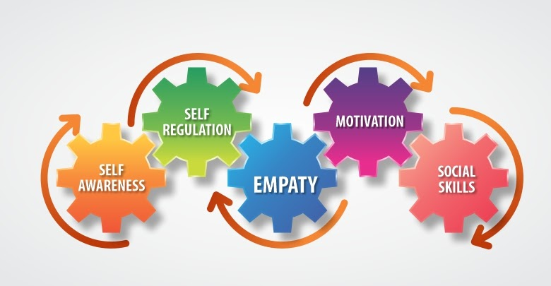

Life Skills
Financial Literacy
Career Building
Professional Skills
Emotional Intelligence
Social Skills
What are Life Skills?
Life skills are essential abilities that help young adults navigate daily life effectively and responsibly. These skills can include communication, problem-solving, time management, financial literacy, and emotional intelligence.
Why does this matter?
Life skills matter because they equip individuals with the practical abilities to navigate daily challenges, make informed decisions, and build meaningful relationships. These skills enhance personal development, foster independence, and improve overall quality of life, helping individuals to thrive in both personal and professional environments.
Click image to watch a video

What is Financial Literacy?
Financial literacy is the ability to understand and use various financial skills, including personal financial management, budgeting, and investing.
Why does this matter?
Financial literacy is important because it helps individuals make informed decisions about their money, leading to better financial stability and avoiding debt.
Click image to watch a video
What is Career Building?
Career building is the process of developing and advancing in one's professional life through gaining skills, experience, and knowledge.
Why does this matter?
Career Building is important because it helps individuals achieve their career goals, improve job satisfaction, and increase earning potential.
Click image to watch a video
What are Professional Skills?
Professional skills are the essential abilities and competencies, such as communication, teamwork, problem-solving, and time management, that enable people to effectively perform tasks, adapt to workplace environments, and achieve career success.
Why does this matter?
Professional skills are crucial because they empower people to excel in their careers, fostering personal growth, enhancing job performance, and increasing opportunities for advancement in the competitive job market.
Click image to watch a video
What is Emotional Intelligence?
Emotional intelligence is the ability to recognize, understand, and manage one's own emotions and the emotions of others, enabling effective interpersonal relationships and decision-making.
Why does this matter?
Emotional intelligence is vital because it enhances communication, reduces stress, improves relationships, and increases resilience, all of which contribute to personal and professional success.
Click image to watch a video
What are Social Skills?
Social skills are the abilities to communicate, interact, and build relationships with others effectively and appropriately in various social contexts.
Why does this matter?
Social skills are important because they facilitate collaboration, improve networking opportunities, and enhance both personal and professional relationships, leading to greater success and fulfillment.
Click image to watch a video